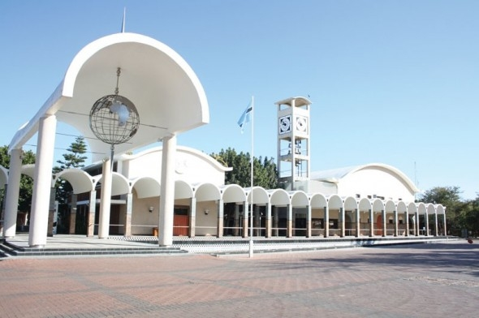
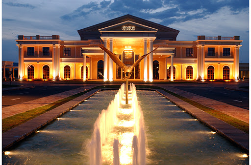
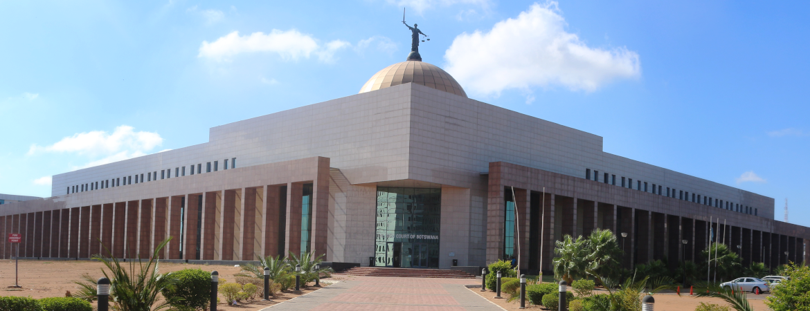

The Parliament of Botswana consists of the President and the National Assembly. In contrast to other Parliamentary systems, the Parliament elects the President directly (instead of having both a ceremonial President and a Prime Minister who has real authority as head of government) for a set five-year term of office. A president can only serve 2 full terms.

The ultimate business and leisure experience is offered at the Peermont Walmont Gaborone. This luxurious hotel offers 188 rooms and suites. Perfect for both business and leisure travellers, the hotel’s distinctive character and charm is underpinned with efficiency, comfort, luxury and privacy. The Peermont Walmont Gaborone is equipped with all the facilities and modern conveniences discerning travellers expect.

The Three Dikgosi Monument is a bronze sculpture located in the Central Business District of Gaborone, Botswana. The statues depict three dikgosi (tribal chiefs): Khama III of the Bangwato, Sebele I of the Bakwena, and Bathoen I of the Bangwaketse. Events are held at the monument such as the 2008 Miss Independence Botswana.[1] A study conducted between January and August 2007 shows that the monument is the most visited tourist destination in Gaborone

The Botswana Accountancy College, or BAC, is a business school headquartered in the city of Gaborone, Botswana. Initially funded and established through a joint venture between The Ministry of Finance and Development Planning and Debswana, the college caters for the accountancy and IT tertiary needs of the country. BAC has two main campuses; the main campus being located in Gaborone, and the secondary one in Francistown. The college has collaborations with The University of Derby and The University of Sunderland in England.

The High Court of Botswana is the highest court of Botswana. It is based Gaborone with branches in Lobatse, Francistown, and Maun. It operates above the Magistrates' Courts of Botswana, but below the Appeal Court. The High Court is headed by the Chief Justice of Botswana.

This informal hotel in the Central Business District is a 12-minute walk from Three Dikgosi Monument, dedicated to tribal leaders, 3 km from art at the Botswana National Museum, and 14 km from Sir Seretse Khama International Airport.Relaxed rooms feature free Wi-Fi and flat-screen TVs. Suites add separate living areas, while apartments include kitchens. Room service is offered 24/7.